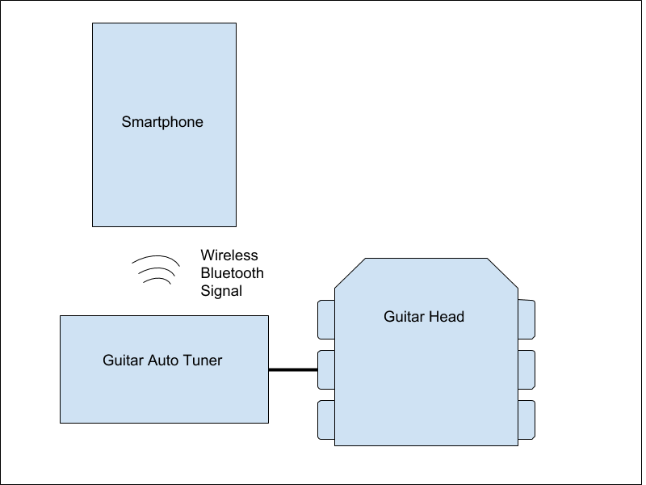
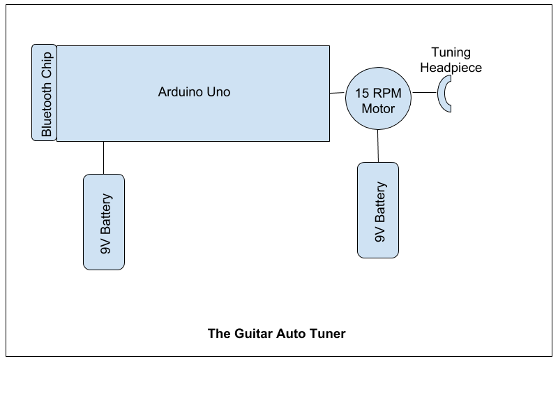
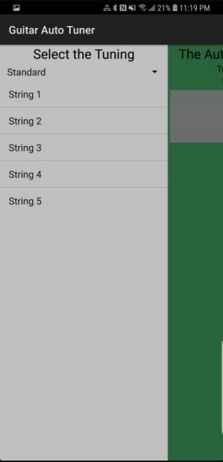
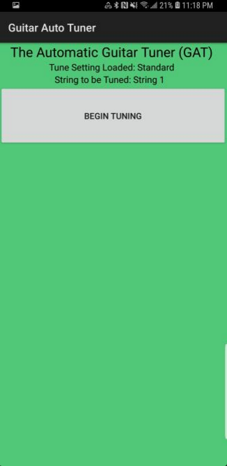
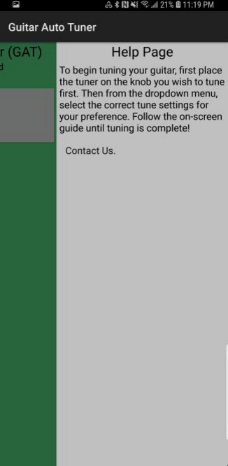
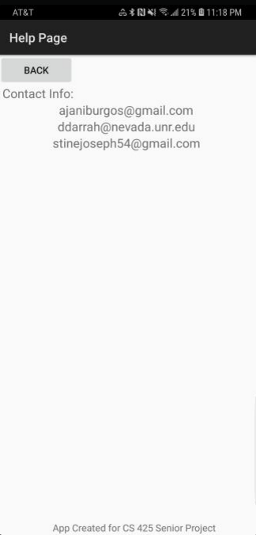
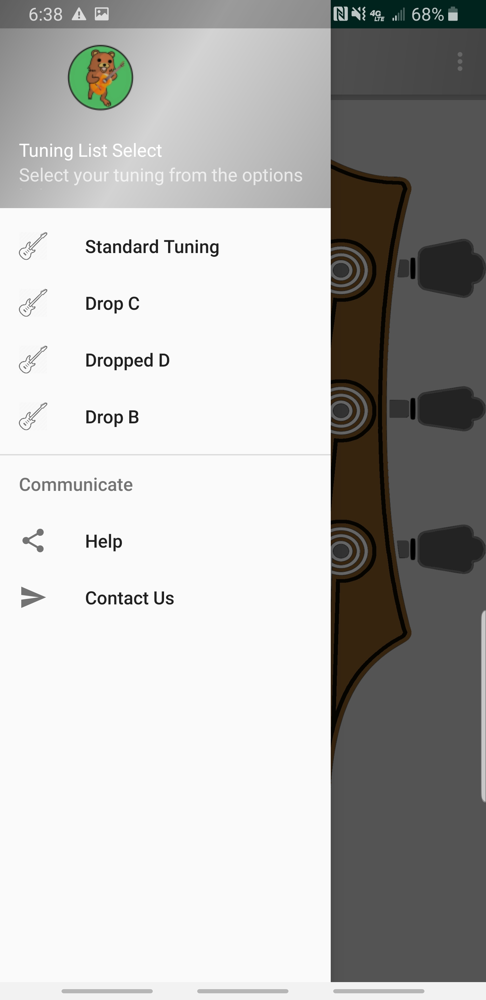
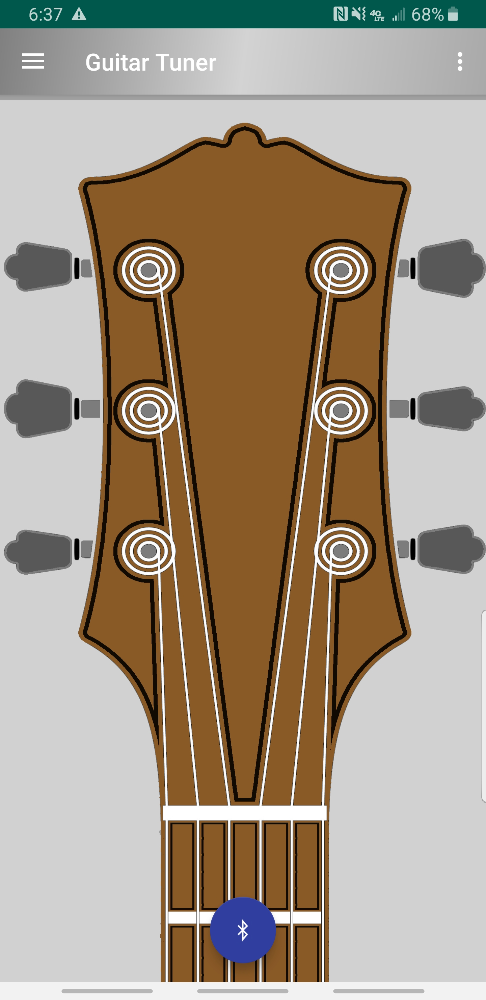
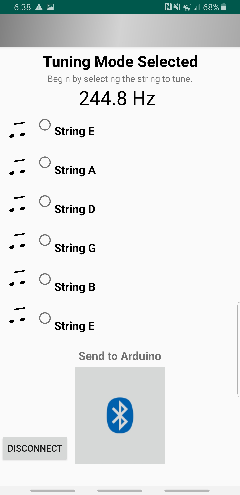

TO-DO LIST:
Create the mobile companion app
Establish communication with the device via BluetoothSend frequency information from the device to the app & viseversa- Allow for customization of tuning configuration(?)
- Build a prototype
Have the device recording frequencies
Work in progress: recordings not as accurate as desired
Have the device spin the motor bidirectionally
Still need to fine-tune the logic necessary to have the motor spin based on the frequency
- Update the prototype
- Allow for desired changes not addressed in the initial prototype
- Contain the hardware in one consistent unit
Create a tuning knob-piece to attach to the motor Begin testing with a guitar
DEVELOPER'S LOG:
Fall 2018:
- Created the initial design of the device's functionality:

- Created the initial design of the device itself:

- Prototyping begins!
- Things accomplished
- Established communication with the Bluetooth controller + mobile app
- Able to detect different frequencies using the microphone
- Able to adjust the logic in order to turn the motor in specific directions
- Created initial mobile companion interface




23 January 2019:
- The official Guitar Auto Tuner website is born!
- Hosted on the CSE domain of UNR.
- Created different pages for the information neccessary
- Will be using placeholders for future additions (i.e. project video)
29 January 2019:
- Second demo occured with Devrin at 10AM in the MIKC, some of the things mentioned are:
- Need to meet more frequently, keep working on progress
- May need to upgrade the embedded system from an Arduino Uno to an Arduino Duo/Raspberry Pi
- May need to consider upgrading the torque of the motor when turning the actual peg
- Still need to clean up the accuracy of the frequency readings to match the frequencies being projected
- Need to clean up the mobile app, create a more robust user interface
- Need to create a single unit, hide the cabling
- May need to create a request on Innovations Day for a quieter space (VR Area?), maybe include sound compression padding
8 February 2019:
- Identified potential risks...
- Design Risks:
- Microphone interruption [HIGH]
- Lack of processing cores on Arduino Uno [MED-HIGH]
- Microphone location [MED]
- Containing parts in a single unit [MED-LOW]
- Adequeate motor torque [LOW]
- Bluetooth compatibility [LOW]
- Time Risks:
- Finishing main interface prior to next meeting [LOW]
- Budget Risks:
- Possible hardware swap of either embedded system OR microphone [MED-HIGH]
22 February 2019:
- Reiterated on resources used, use cases, and functional/nonfunctional requirements
8 March 2019:
- Changed Technology used for mobile application
- Xamarin-->Android Studio
- Lack of support for working with Bluetooth, one of our primary technologies
- User interface much more polished compared to previous iteration:



- Identified User Stories & Acceptance Criteria
- Mobile Application
- User Story 1: Easy app navigation
- Show necessary information in a concise format
- Minimize amount of menus for user to navigate through
- User Story 2: Reliable Connectivity Between Device & Smartphone
- Have smartphone automatically connect once a connection has been established
- Ensure stable connection throughout tuning process
- Guitar Auto Tuner Device
- User Story 1: Easy Attachment
- Ensure motor fits snug to tuning peg
- Minimize/eliminate any unneccesary exposed wires in the final product
- User Story 2: Damage Reduction
- Ensure proper motor torque, but not fast enough to break a string/damage the tuning knob
- Implement a safety system that detects that the string is getting too tight based on a high frequency for the string being tuned
- Identified Happy & Unhappy Path Workflow
- Happy Path
- Proper use & tuning
- Changing desired tuning
- User feedback
- Unhappy Path
- Incorrect frequency readings
- Prevent string damage
- Unable to establish collection with smartphone
13 March 2019:
- Presented our progress to Devrin Lee & Connor Scully-Allison
- Updated them on technology update
- Demonstrated latest iteration of the mobile app
- Demonstrated ability to send necessary information over Bluetooth from the phone to the device
- Demonstrated that the motor's torque was sufficient enough to turn the tuning knob
4 April 2019:
- Presented our project to the rest of the class
- Showed off general functionality of the project itself
- Showed off the hardware and technologies that we're using
- Demonstrated connectivity from the device to the smartphone
19 April 2019:
- Changed general design of the device, decided to use the smartphone's microphone over the extra microphone we were originally using
- The frequency readings were inaccurate prior to this change. This was due to the microphone being used being of low quality.
- We found the frequency readings from the microphone were much more precise compared to before.
- Currently finishing up fine-tuning the logic necessary to turn the tuning peg before Innovations Day
- Not as automatic as we'd like it to be, as it still requires much more user input than necessary.
- But the project is in a much better state than it was prior to presentation.
- Of course, this leaves us plenty of room for future development in delivering a more polished final product.
22 April 2019:
- After finishing up with the main functionality of the device itself, we decided not to solder the components together
- This was after assessing the amount of risk with our lack of soldering experience and the remaining time left before Innovations Day.
- Didn't want to risk destroying our breadboard and wait for another shipment before Innovations Day.
- Began filming the video that will be displayed on our website.
- We plan on going over the device's functionality, how it works with the mobile app, and a demonstration with narration throughout of how it's supposed to work.
30 April 2019:
- Demonstrated our project to Devrin Lee & Connor Scully-Allison
- Discussed our change in design, updates to user interface & design on the mobile app, and received feedback about our project
- UI and design Updates were well received, didn't really have to worry about anything else prior to Innovations Day
3 May 2019:
- Innovations Day has come...
- We plan on all being there throughout the time allotted to demonstrate our project.
- Needless to say, we demonstrated the general functionality of the device itself with passerbys
- It was very well-received, the smaller room helped with noise enough to tune treble strings but not as reliably as desired for bass strings
- Some visitors mentioned that the project was very cool and unique, and others pointed out some counterarguments for why they would want to use our device, their arguments were:
- Tuning by ear is something developed over time and some users may end up relying on the device
- The device is still not as fast as tuning by hand
- All-in-all though, the project was a success!
- Now we're just finalizing everything and uploading everything necessary for submission